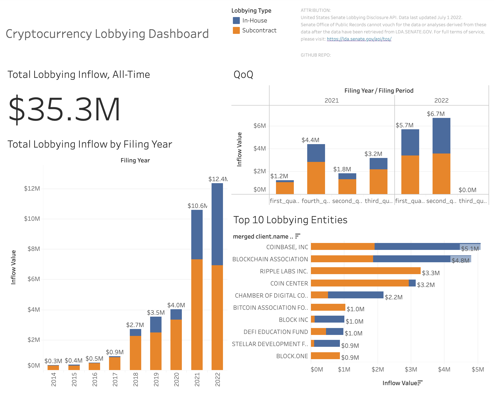

A regulatory battle has been brewing in the cryptocurrency world and things are about to heat up. US Securities and Exchange Commission (SEC) chairman Gary Gensler (who even taught a course about blockchain and bitcoin at MIT) has repeatedly stated in the past that Bitcoin was the only cryptocurrency he felt comfortable enough classifying as a commodity, implying that all others fall within the jurisdiction of the SEC. On July 21st, in the first-of-a-kind action, the SEC charged a former Coinbase product manager on insider trader charges for allegedly tipping two others off on which cryptocurrency tokens were about to be listed by Coinbase. Gurbir S. Grewal, Director of the SEC’s Division of Enforcement, made it clear the crypto assets at hand were securities, stating: "In this case, those realities affirm that a number of the crypto assets at issue were securities, and, as alleged, the defendants engaged in typical insider trading ahead of their listing on Coinbase.” Caroline Pham, a commissioner for the Commodity Futures Trading Commission (CFTC), immediately fired back, stating that the SEC vs. Wahi was a ‘striking example of regulation by enforcement’ and that the digital assets at hand could be described not as securities, but as utility tokens relating to decentralized autonomous organizations. Just after the Ethereum ecosystem completed its long awaited “Merge” event to its proof-of-stake mechanism on September 15th, Gensler again reiterated that PoS cryptocurrencies such as Ethereum could be classified as securities. These events highlight the lack of a US regulatory framework in place for digital assets, and which government agencies have jurisdiction over which cryptocurrencies.
hi.
